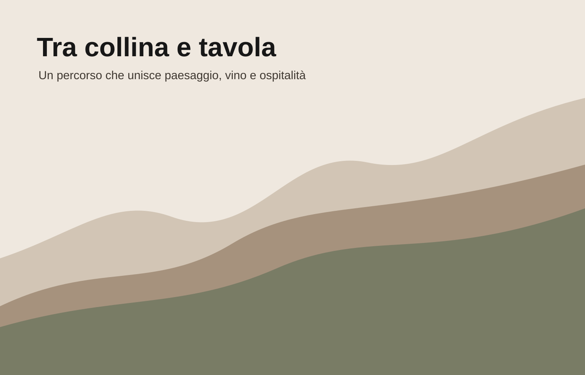

Collina
La salita è parte dell’esperienza: il vino viene raccontato attraverso il paesaggio.
La strada del vino
Stracrösa è un percorso tra colline, cantine e piccoli paesi. Una strada che sale dai vigneti, raggiunge il crinale e torna alla tavola con il racconto del territorio.

Identità
La Ö diventa il punto più alto: due quote diverse, unite da una traccia sottile. Il marchio resta una scritta, ma suggerisce l’altitudine della collina.
Il sito accompagna il visitatore dal nome alla strada, dalle cantine ai vini, fino al momento della tavola.
La salita è parte dell’esperienza: il vino viene raccontato attraverso il paesaggio.
Soste brevi e autentiche, pensate per incontrare chi produce.
Il percorso si chiude con il vino nel suo contesto più naturale: la convivialità.